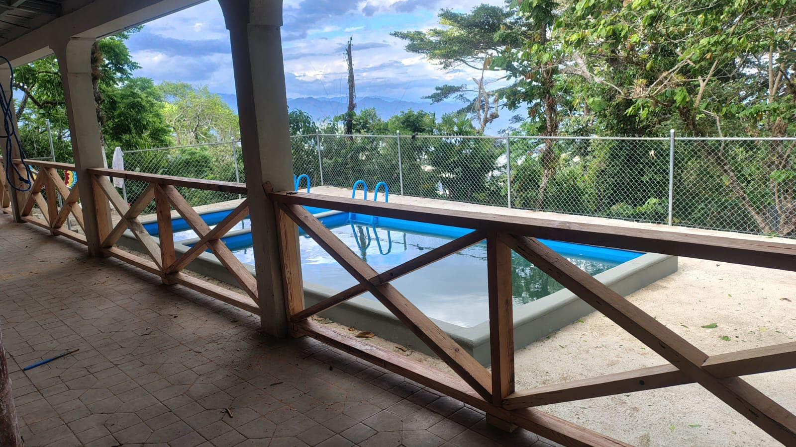
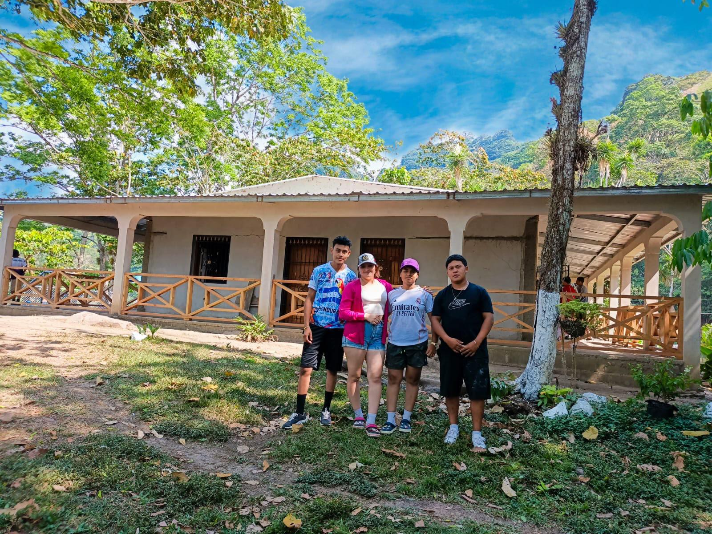

Casa de Montaña con Piscina y Jardín
Relájate en nuestra casa de montaña rodeada de árboles y aire fresco. Cuenta con amplios corredores con baranda de madera, piscina con vista panorámica a las montañas, jardín con el columpio de alas de mariposa para tus fotos y fogón con leña si traes alimentos para cocinar en familia.
- Piscina disponible para visitantes con vista al paisaje
- Puedes ingresar tus alimentos · fogón y leña disponibles
- Jardín con columpio de alas de mariposa y vino artesanal